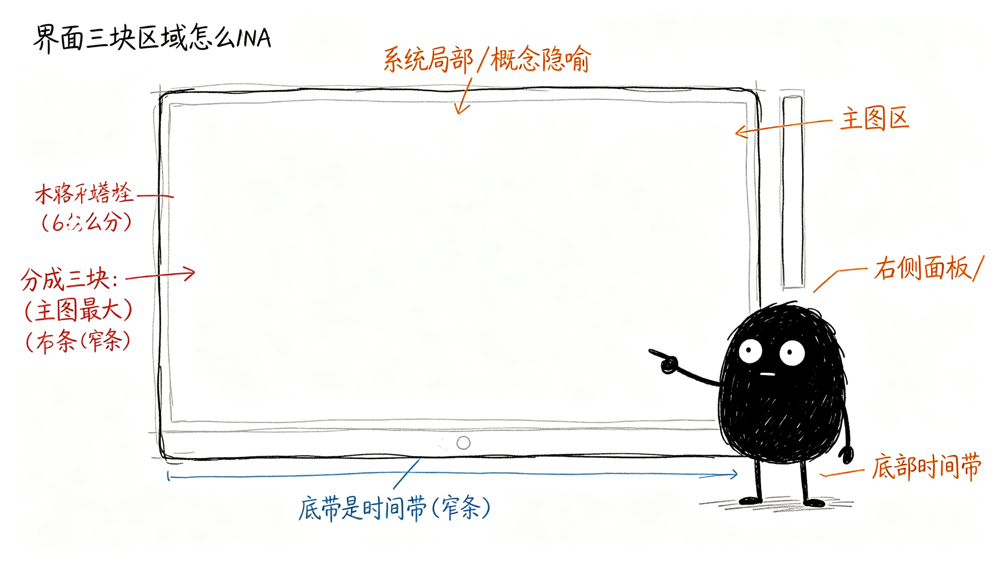

这些信息怎么摆？
第三章讲了信息分三层：核心层、支撑层、细节层。那这些东西在界面上怎么摆？主图放什么？右边放什么？底部放什么？
整体布局怎么分？
打开这个工具，界面大概分成三块：
主图区——占大部分面积 中间最大的那块，放K线和所有画在图上的标记。这是视觉核心，你的眼睛主要盯着这里。
右侧面板——窄条 主图右边一条窄条，放工具帮你总结的结论——现在是啥趋势？建议怎么操作？错了在哪认？
底部时间带——窄条 主图下面一条窄带，从左到右标着一段一段的趋势，扫一眼就知道整体走势是涨是跌。

主图区里，信息怎么排优先级？
主图上不能所有标记都一样明显，得有轻重：
最粗最显眼的——趋势线 连接高低点的那条线，一眼就看出现在是涨是跌。这是主图上最核心的视觉元素。
次一级的——中枢 震荡区域的边界，用细一点的线画出来。知道哪里是震荡核心，但不会抢趋势线的风头。
只在最近的关键位置画——防守位/压力位、观察区、确认点、失败线 历史上的防守位压力位，早就过去了，画在图上也是干扰。只有最近的、跟当前操作相关的关键位置，才值得标出来。这才是有效信息。
细节默认隐藏——分型、笔 这些是底层结构，平时不用全画出来。想看的时候点一下某个位置，再展开看细节。
右侧面板里，信息怎么排优先级？
右侧面板从上到下，也是先核心后次要：
最上面——核心结论 当前是什么趋势？建议怎么操作？这是你最想知道的，放在最上面一眼看到。
中间——支撑结论 现在走到什么位置了？力度怎么样？错了在哪认？这些是补充信息，放在核心结论下面。
最下面——细节 为什么这么判断？具体证据是什么？放在最下面，想追问的时候再看。
底部时间带呢？
底部时间带很简单，就是一段一段的趋势标记，从左到右排过去。不用分太多层，就是让你扫一眼就知道：前面这段是上涨，后面这段是下跌，现在到哪了。
这样摆下来，图不会乱，你打开就能一眼抓住重点。